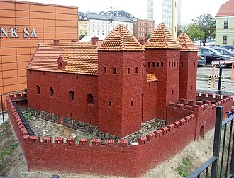
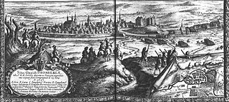

Znajdujące się w obrębie dzisiejszej Bydgoszczy osady były zasiedlone na stałe od epoki brązu. Znaczny rozwój osadnictwa nastąpił w okresie rzymskim, kiedy stwierdzono kontakty handlowe miejscowej ludności z cesarstwem.
Średniowiecze
 Dogodne położenie osad i łatwa przeprawa przez Brdę wykorzystywane były wówczas przez kupców podróżujących traktem bursztynowym. W tym miejscu omijano Wisłę,
pokonując brodem Brdę. Według najnowszych badań, opartych o metodę dendrochronologiczną, gród bydgoski, którego relikty odkrywane są do dziś, zbudowano w 1038. Pierwsza wzmianka o kasztelanie bydgoskim Suzzlaus de Budegac pochodzi z 1238.
Wcześniejszą genezę ma osada oraz kościoły: pod wezwaniem św. Marii Magdaleny (przed 1198) w Wyszogrodzie (warowni nad Wisłą w obrębie dzisiejszego terytorium Bydgoszczy, której zdobycie przez Bolesława Krzywoustego w 1113 jest opisane
w Kronice Galla Anonima) oraz romański kościół pod wezwaniem. św. Idziego. We wczesnym średniowieczu Bydgoszcz była grodem na północnych Kujawach. Książę Kazimierz Kujawski do połowy wieku XIII zbudował w Bydgoszczy stały most przez Brdę,
gdzie pobierano cło od towarów przewożonych na Pomorze Gdańskie. Na początku XIV wieku w następstwie podziałów dzielnicowych na Kujawach powstało księstwo bydgosko-wyszogrodzkie.
Rzeczpospolita Obojga Narodów
 W 1555 roku Bydgoszcz uzyskała przywilej de non tolerandis Judaeis[68]. W XV i XVI w. miasto znacznie wzbogaciło się na handlu spławnym zbożem, piwem i solą. Bydgoszcz w XVI wieku była jednym
z największych miejskich ośrodków handlu zbożowego w Polsce. Wedle zachowanych rejestrów z komory wiślanej w Białej Górze, w 1579 co szósty statek zdążający do Gdańska miał port macierzysty w Bydgoszczy. Miejscowi szyprowie (zrzeszeni
w cechu od 1484) transportowali średnio rocznie 2030 łasztów zboża (według zachowanych rejestrów z lat 1564–1573) pochodzącego z Kujaw i Wielkopolski, a z powrotem przywozili towary zamorskie kupowane w Gdańsku. Miasto było również ośrodkiem
rzemiosła (21 cechów, 80 zawodów) oraz siedzibą zakładów-manufaktur. Na szczególną uwagę zasługuje czynna w latach 1594–1688 mennica, w której w 1621 wybito największe złote monety w Europie – 100 dukatów Zygmunta III Wazy. Mennica w latach
1627–1644 była jedyną, czynną na obszarze Korony.